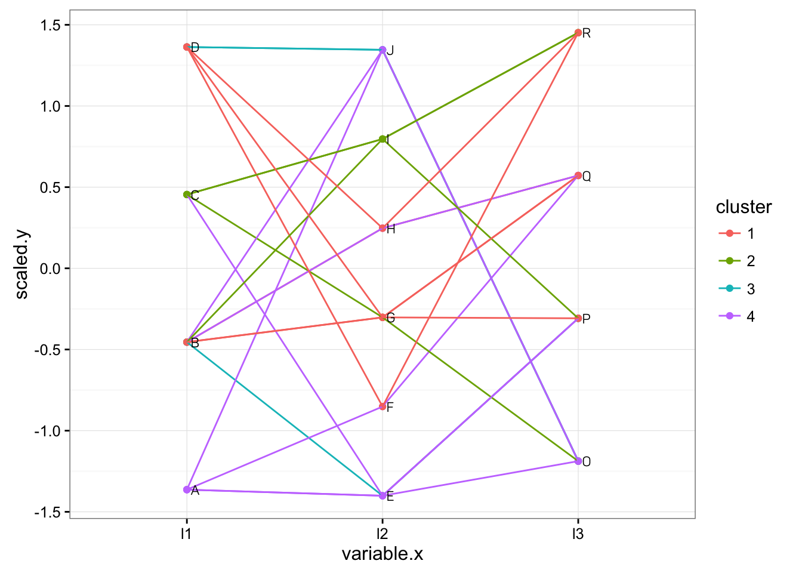

The required library for this plot are ggplot2, dplyr, knitr, stringr and data.table.
Populate some dummy datasets.
data = data.frame(
'l1' = sample(LETTERS[1:4], 20, T),
'l2' = sample(LETTERS[5:10], 20, T),
'l3' = sample(LETTERS[15:18], 20, T),
'cluster' = sample(1:4, 20, T))
# a helper function to convert an object name into literal string
var_to_name <- function(x){
deparse(substitute(x))
}
# print out the data frame
kable(data, caption = var_to_name(data))| l1 | l2 | l3 | cluster |
|---|---|---|---|
| B | G | Q | 1 |
| B | H | Q | 1 |
| B | E | P | 3 |
| A | F | Q | 4 |
| D | J | O | 3 |
| C | E | P | 4 |
| A | J | O | 4 |
| D | J | O | 3 |
| C | G | O | 2 |
| B | J | O | 4 |
| A | E | O | 4 |
| C | I | R | 2 |
| B | H | Q | 4 |
| D | F | R | 1 |
| A | E | P | 4 |
| B | I | R | 2 |
| C | I | P | 2 |
| D | G | Q | 1 |
| D | H | R | 1 |
| B | G | P | 1 |
Next we do some massaging on the datasets
# generate id for each row so that we can group the row in line plot
data$id <- seq(nrow(data))
# melt the data frame by keeping id and cluster only
data.melt <- melt(data, id.vars = c('id', 'cluster'))## Warning: attributes are not identical across measure variables; they will
## be dropped# the value column is actually the label value in each column, so we rename it as 'label'
names(data.melt)[grepl('value', names(data.melt), fixed = T) %>% which] = 'label'
# change the label to numeric type so that we can plot it in y-axis
data.melt$value <- as.factor(data.melt$label) %>% as.numeric
dt <- data.table(data.melt)
dt[, variable:=as.factor(variable)]
kable(head(dt), caption = var_to_name(dt))| id | cluster | variable | label | value |
|---|---|---|---|---|
| 1 | 1 | l1 | B | 2 |
| 2 | 1 | l1 | B | 2 |
| 3 | 3 | l1 | B | 2 |
| 4 | 4 | l1 | A | 1 |
| 5 | 3 | l1 | D | 4 |
| 6 | 4 | l1 | C | 3 |
# scale the value group by its column name and use a new column 'scaled' to store it
dt[, scaled:=scale(value), variable]
# create the dataset for text labelling
data.label <- dt[, .(variable, label, scaled)] %>% distinctStart to plot the graph.
g = ggplot(dt, aes(x = variable, y = scaled)) + geom_point(
aes(color = as.factor(cluster))) + geom_line(aes(group = id, color = as.factor(cluster)))
# vectorize str_wrap function so that we can wrap the text in label column if its too long
wraptxt <- Vectorize(str_wrap, vectorize.args = 'string')
# plot the label
g1 = g + geom_text(data = data.label, aes(x = variable, y = scaled, label = wraptxt(label, width = 10)),
family = 'Panton', hjust = 'left', nudge_x = .02, size = 3)
g1 + scale_color_discrete(name = 'cluster') + theme_bw() + theme(legend.key = element_rect(color = NA))